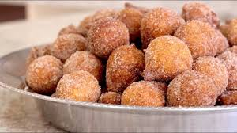

Bolinho de chuva tradicional:
Ingredientes:
- 2 ovos
- 2 colheres (sopa) de açúcar
- 1 xícara (chá) de leite
- 2 e 1/2 xícaras (chá) de farinha de trigo
- 1 colher (sopa) de fermento
- 3 colheres (sopa) de açúcar
- 1 colher (chá) de canela

Modo de preparo:
- Em um recipiente, adicione os ovos, o açúcar, o leite, a farinha de trigo e o fermento, depois misture-os até obter uma massa lisa e homogênea.
- Com a ajuda de uma colher, pegue porções da mistura e despeje em uma panela com o óleo quente.
- Retire do fogo quando estiver no ponto, depois misture a canela com açúcar e salpique no bolinho de chuva já frito.
Modo de preparo:
Matérias relacionadas:
Bolinho de chuva com brigadeiro
Bolinho de chuva sem ovo
Bolinha de chuva diet